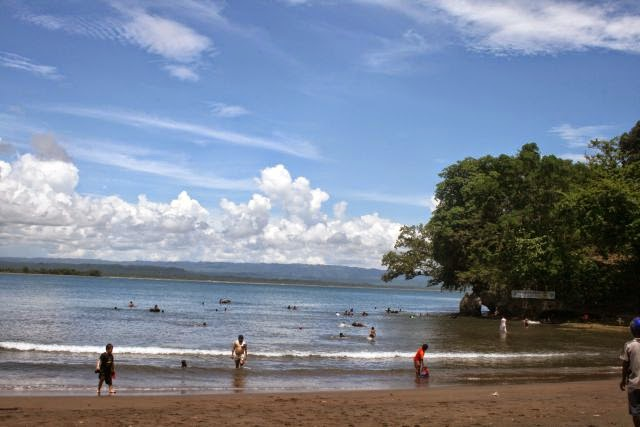

Daftar Wisata


Batukaras
Objek wisata yang satu ini merupakan perpaduan nuansa alam antara objek wisata Pangandaran dan Batu Hiu dengan suasana alam yang tenang, gelombang laut yang bersahabat dengan pantainya yang landai membuat pengunjung kerasan tinggal di kawasan ini. Terletak di Desa Batukaras, Kecamatan Cijulang dengan jarak ± 34 km dari Pangandaran.